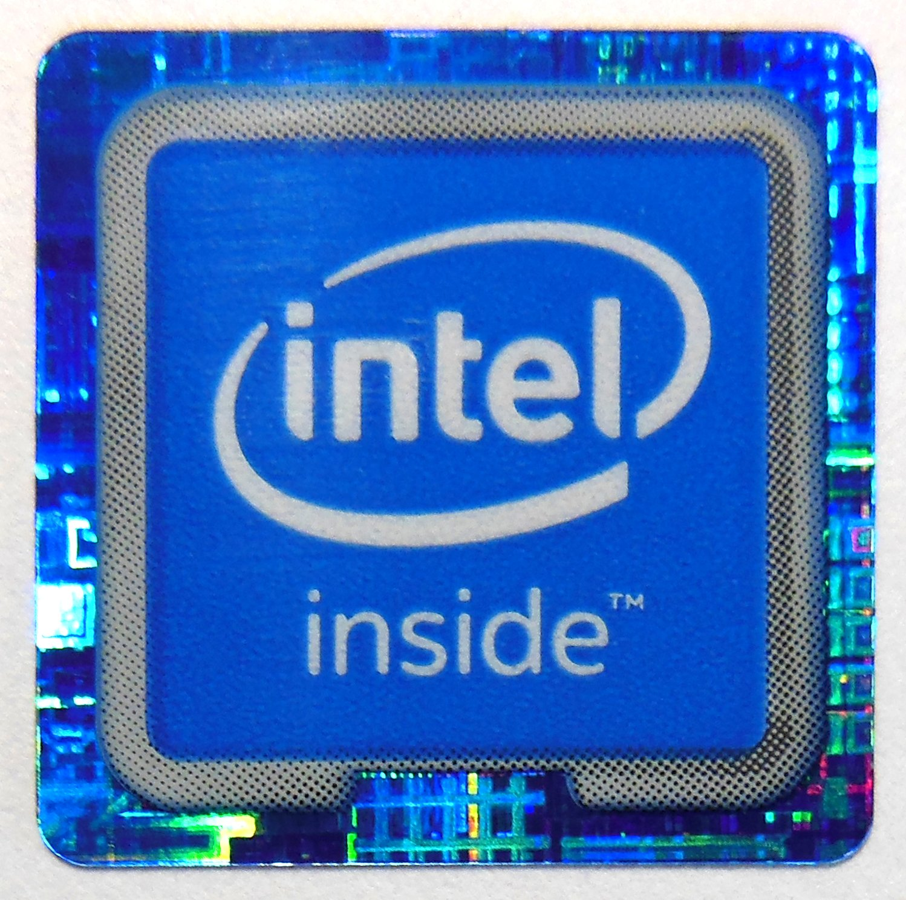

La Historia de Intel
Publicado el 27/05/2025
Ignacio Confalonieri

Intel Corporation fue fundada en 1968 por Robert Noyce y Gordon Moore, dos ingenieros que previamente trabajaban en Fairchild Semiconductor. Su objetivo era revolucionar el mercado de los semiconductores, y lo lograron al convertirse en el fabricante de chips más importante del mundo.
En 1971, Intel lanzó el primer microprocesador comercial de la historia, el Intel 4004. Aunque inicialmente diseñado para una calculadora, sentó las bases de la informática moderna. A este le siguieron el 8008 y luego el famoso Intel 8080, que marcó el comienzo de una nueva era en la computación personal.

Durante los años 80, Intel se consolidó como el líder de la industria, especialmente gracias a su colaboración con IBM, que adoptó sus microprocesadores para la línea de computadoras personales. Esta alianza posicionó a Intel como la columna vertebral del PC moderno.
Con el paso del tiempo, Intel fue desarrollando nuevas arquitecturas como la serie Intel x86, que aún hoy domina el mercado de procesadores. En los años 90, el lanzamiento de los procesadores Pentium le dio una gran ventaja competitiva. Además, invirtieron fuertemente en marketing, convirtiendo el nombre “Intel Inside” en sinónimo de potencia y calidad.
En los años 2000, Intel enfrentó nuevos desafíos. Por un lado, AMD comenzó a ganar terreno con procesadores más eficientes y accesibles. Por otro lado, el mercado cambió: la demanda se movió hacia dispositivos móviles, donde Intel no logró posicionarse con éxito frente a arquitecturas como ARM.
Sin embargo, Intel ha mantenido su relevancia gracias a su capacidad de innovación. Ha desarrollado tecnologías clave como Hyper-Threading, Turbo Boost y procesos de fabricación avanzados en nanómetros. Además, ha entrado en el mercado de inteligencia artificial, 5G y centros de datos con nuevas inversiones.
En la actualidad, Intel compite con gigantes como Apple (con sus chips M1/M2), AMD y Nvidia. Bajo el liderazgo de Pat Gelsinger, la compañía ha renovado su visión a largo plazo, buscando recuperar la supremacía en innovación y capacidad de producción con plantas nuevas en EE.UU. y Europa.
La historia de Intel es, en muchos sentidos, la historia del avance tecnológico del último medio siglo. Desde el primer microprocesador hasta la inteligencia artificial, ha jugado un papel clave en el desarrollo del mundo digital tal como lo conocemos.